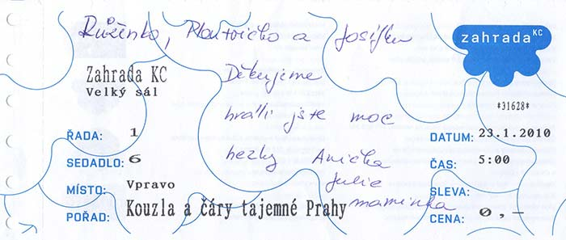
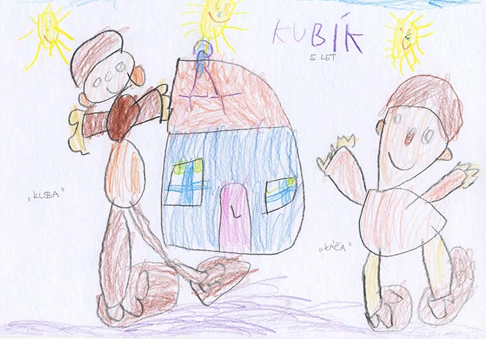
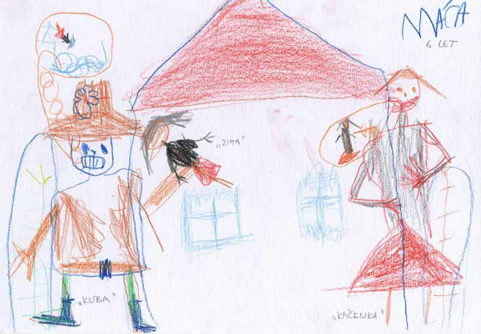
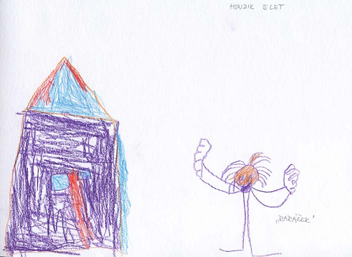
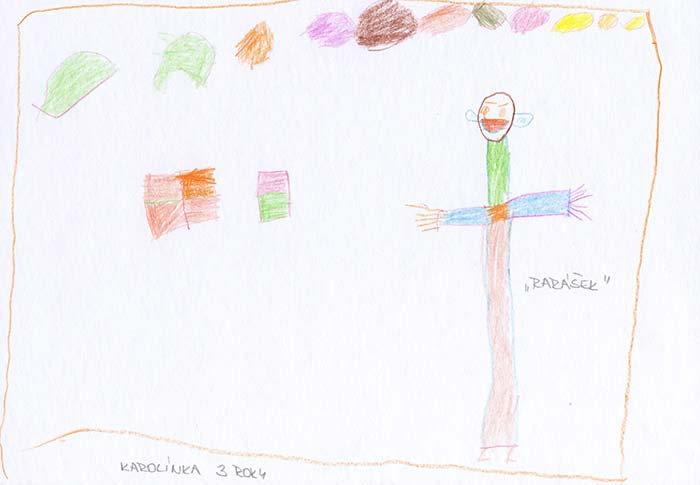
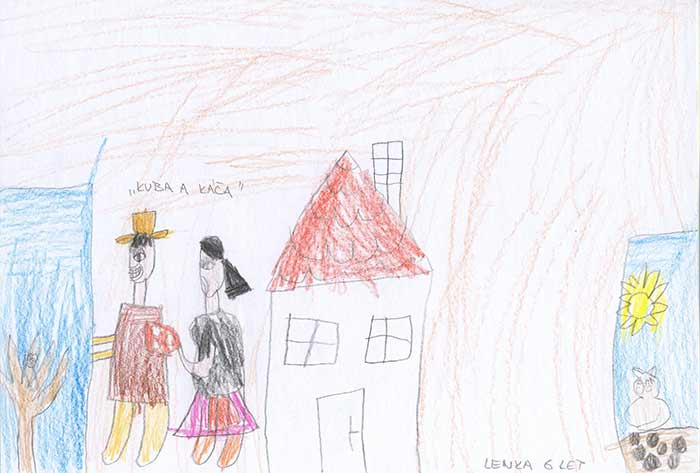

Vzkazy od diváků
Dobrý den,
učím asi 23 let a dnes jsem byla s prvňáčky v Čáslavi na Vašem představení „Pohádka o třech námořnících“. Nedá mi to a musím Vám napsat, že za celou dobu „učitelování“ jsem lepší divadlo neviděla. Opravdu jsem se bavila, děti byly nadšeny, byl to pro mě po dlouhé době obrovský zážitek. V příštích kulturních nabídkách si ohlídám, abych o Vás nepřišla. Moc Vám děkuji a přeji hodně úspěchů.
Hana Štainerová, ZŠ a MŠ Potěhy, p. Tupadly
Dobrý den,
dnes jsem byla se synem na Vašem představení O třech námořnících v KC 12, a protože jsme doposud neviděli úžasnější představení, chtěla bych Vám touto cestou poděkovat za neuvěřitelné herecké výkony, skvělou choreografii a ještě lepší atmosféru. Dlouho jsme se tak nezasmáli.
Přejeme celému Vašemu souboru hodně úspěchů a spokojených diváků. My k nim rozhodně patříme, těšíme se na další setkání...
S pozdravem Marta Poláková
Dobrý den,
děkuji členům divadla Ludvík - Pavlíně Jurkové, Jarmile Vlčkové a Lukáši Jurkovi za báječné představení dne 25.11.2012 v Chrudimi.
Už dávno jsem neměla možnost se tak pěkně pobavit a vnučka byla přímo nadšená. Držím Vám palce a přeji hodně úspěchů v dalších hrách. Nezapomeňte co nejdříve zase do Chrudimi přijet.
Vřelé díky Ivana Dolanová
Dobrý den,
dnes jsem viděla vaše představení Pohádka o třech námořnících v divadle v Chebu. A musím vám vyseknout poklonu, z představení jsem byla nadšená i já, dcery se také moc bavily. Velmi se mi líbily látkové kulisy a výkony herců. Na úžasný výkon paní Vlčkové budu dlouho vzpomínat, závidím jí její nadhled a "luxusní pohyby". Ještě teď se směji. Děkuji za super zážitek a těším se, až opět zavítáte do Chebu.
S pozdravem Pavla Marková
Strakaté bajky, divačka Aneta

Kouzla a čáry tajemné Prahy, KC Zahrada

Pohádka o Kačence a raráškovi, MŠ Rohožník

Pohádka o Kačence a raráškovi, MŠ Rohožník

Pohádka o Kačence a raráškovi, MŠ Rohožník

Pohádka o Kačence a raráškovi, MŠ Rohožník

Pohádka o Kačence a raráškovi, MŠ Rohožník

Pohádka o Kačence a raráškovi, MŠ Rohožník